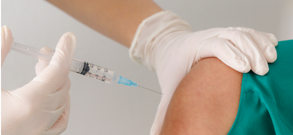

척추의 퇴행성 변화
노화되어 척추를 지지하는 힘이 약해지면 위쪽 척추뼈가 앞으로 밀릴 수 있습니다.
위쪽 척추뼈가 아래쪽보다 앞으로 밀려나면
허리 통증과 함께 엉덩이·다리까지 불편함이 이어질 수 있습니다.
척추 관절의 노화나 뼈의 결손, 선천적인 구조 이상 등으로 척추의 안정성이 약해지면서 발생할 수 있습니다.
노화되어 척추를 지지하는 힘이 약해지면 위쪽 척추뼈가 앞으로 밀릴 수 있습니다.
연결 부위에 결손이 생기면 척추가 불안정해져 전방전위증으로 이어질 수 있습니다.
태어날 때부터 모양이 약하면 성장 과정에서 척추가 이동할 수 있습니다.
뼈를 약하게 만드는 질환으로 인해 척추의 정상적인 배열이 달라질 수 있습니다.
밀려난 척추가 주변 신경을 압박하면 허리뿐 아니라 엉덩이와 다리까지 통증이나 저림이 이어질 수 있습니다.
초기에는 통증을 줄이고 척추 주변 근육의 기능을 강화하여 허리에 가해지는 부담을 줄이는 치료를 시행할 수 있습니다.
진통·소염제 등을 활용하여 허리와 다리에 나타나는 통증을 완화합니다.
척추의 안정성을 고려해 긴장된 근육을 이완하고 허리 주변의 균형과 움직임 회복을 돕습니다.

압박된 신경 주변의 염증과 통증을 줄이는 데 도움을 주며 증상과 검사 결과에 따라 적용합니다.
척추분리증은 척추뼈 일부의 결손이나 피로골절을, 전방전위증은 척추뼈가 앞쪽으로 미끄러진 상태를 말합니다. 서로 관련될 수 있지만 같은 상태는 아닙니다.
밀린 정도만으로 결정하지 않습니다. 통증, 신경 압박, 척추의 안정성 및 생활의 불편함을 확인해 치료 방향을 정합니다.
운동 가능 범위는 통증과 척추의 안정성에 따라 다릅니다. 통증을 유발하는 반복적인 허리 젖힘이나 과도한 부하는 줄이고, 적합한 운동을 안내받는 것이 좋습니다.